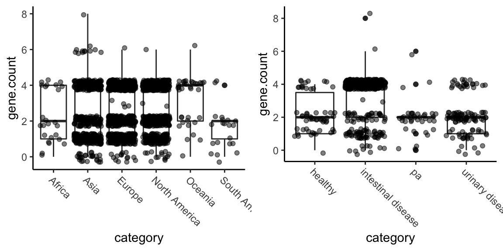
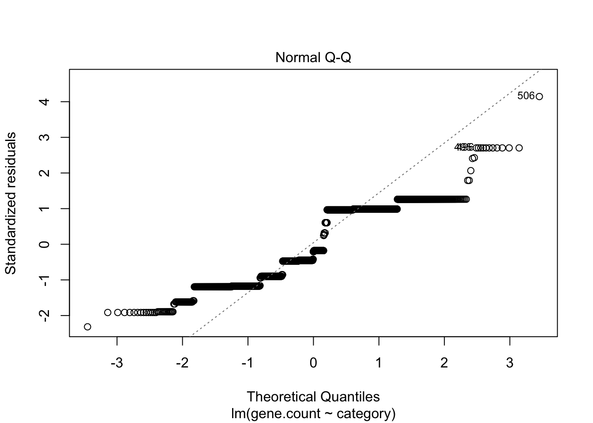
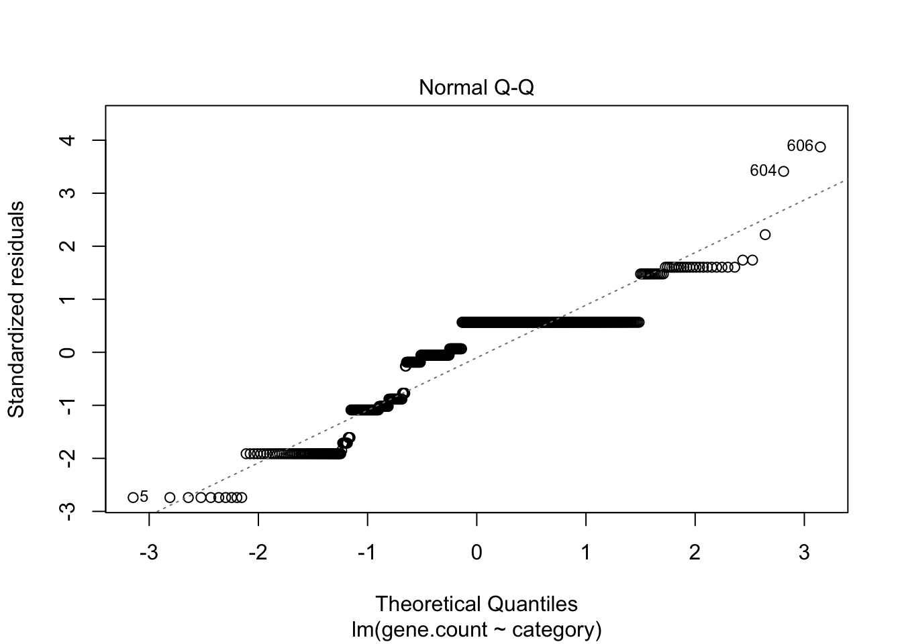
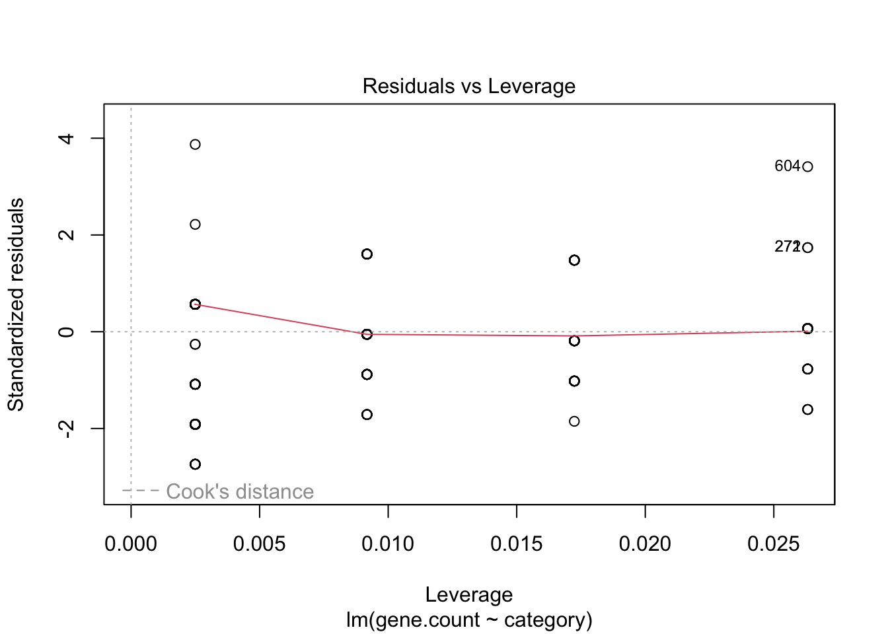

library(tidyverse)
library(MASS)
# Load and pre-process the data by region and pathotype
region <- read_csv("data/region.csv") %>%
filter(`gene number`!="TOTAL") %>%
pivot_longer(cols = 2:7, names_to = "category", values_to = "frequency") %>%
mutate(gene.count = as.numeric(`gene number`)) %>%
dplyr::select(-`gene number`)
path <- read_csv("data/pathotype.csv") %>%
#filter(`gene number`!="TOTAL") %>%
pivot_longer(cols = 2:5, names_to = "category", values_to="frequency") %>%
mutate(gene.count = as.numeric(`gene number`)) %>%
dplyr::select(-`gene number`)
# I need to recreate the raw data to do an anova
# I wrote some *very* ugly code to do this, so I hid it in a separate file
source("R/recreate_raw_data.R")
raw_region_data <- recreate_raw(region) %>%
arrange(category) # this appears to have worked
raw_path_data <- recreate_raw(path)
raw_plot <- function(df) {
p <- ggplot(df, aes(x=category, y=gene.count)) +
geom_boxplot() +
geom_point(position=position_jitter(height = 0.3), alpha = 0.5) +
theme_classic() +
theme(axis.text.x = element_text(angle=-45, hjust=0))
p
}
p_region <- raw_plot(raw_region_data)
p_path <- raw_plot(raw_path_data)modeling_selene_data_via_poisson
Assessing potential differences in distribution of genes among microbes
The purpose of this analysis is to assess potential differences in the distribution of a specific gene among microbes from a specific microbe. Because this document is public, I’m not going to name the gene or the microbe.
ANOVA
A simple way to do this would be an ANOVA. Let’s try and check whether the distributions of residuals and stability of variances look reasonable.

I don’t see obvious differences in distribution, but this is why we do statistics I suppose.
Is a linear model (ANOVA) good for these data? Specifically: ANOVA is fairly robust to unbalanced designs and to heteroskedasticity, but not to hetereoskedastic data in an unbalanced design. So let’s check the heteroskedasticity.
Linear model for regions
region_model <- lm(gene.count ~ category, data=raw_region_data)
summary(region_model)
Call:
lm(formula = gene.count ~ category, data = raw_region_data)
Residuals:
Min 1Q Median 3Q Max
-3.171 -1.247 -0.280 1.372 5.753
Coefficients:
Estimate Std. Error t value Pr(>|t|)
(Intercept) 2.2800 0.2779 8.205 4.37e-16 ***
categoryAsia -0.0326 0.2850 -0.114 0.9090
categoryEurope 0.3484 0.2831 1.231 0.2186
categoryNorth America 0.3772 0.2840 1.328 0.1843
categoryOceania 0.8914 0.3638 2.450 0.0144 *
categorySouth America -0.7086 0.4113 -1.723 0.0851 .
---
Signif. codes: 0 '***' 0.001 '**' 0.01 '*' 0.05 '.' 0.1 ' ' 1
Residual standard error: 1.389 on 1781 degrees of freedom
Multiple R-squared: 0.02528, Adjusted R-squared: 0.02255
F-statistic: 9.24 on 5 and 1781 DF, p-value: 1.071e-08The model for regions finds no significant differences among regions. We can assess the appropriateness of this model with QQ and residual vs factor level plots.
plot(region_model, which=c(2,5)) # actually these don't look as bad as I imagined?

These don’t actually look as bad as I imagined. The QQ plot, ideally, should have all the points on the diagonal line, and they’re not too far off. The residual vs factor levels red line should be flat, and it is impressively flat.
Linear model for pathotypes
path_model <- lm(gene.count ~ category, data=raw_path_data)
summary(path_model)
Call:
lm(formula = gene.count ~ category, data = raw_path_data)
Residuals:
Min 1Q Median 3Q Max
-3.3142 -0.9211 0.6858 0.6858 4.6858
Coefficients:
Estimate Std. Error t value Pr(>|t|)
(Intercept) 2.2241 0.1591 13.980 < 2e-16 ***
categoryintestinal disease 1.0901 0.1702 6.404 3.05e-10 ***
categorypa -0.3031 0.2529 -1.199 0.231
categoryurinary disease -0.1599 0.1969 -0.812 0.417
---
Signif. codes: 0 '***' 0.001 '**' 0.01 '*' 0.05 '.' 0.1 ' ' 1
Residual standard error: 1.212 on 602 degrees of freedom
Multiple R-squared: 0.1904, Adjusted R-squared: 0.1864
F-statistic: 47.19 on 3 and 602 DF, p-value: < 2.2e-16Again, no significant differences.
plot(path_model, which=c(2,5))

Same situation here. The QQ plot isn’t ideal, but it isn’t awful, either.
Poisson distribution?
I propose that we can think of gene distribution as a poisson process, where different values of \(\lambda\) indicate different probabilities of the gene being “handed out”. If this is the case, we can assess whether there are difference in lambda among regions or pathotypes - but first we need to assess whether the data are, in fact, poisson-distributed. We’ll simply load the data, fit it to a poisson distribution, and see whether the fit looks good. I think in this case a qualitative assessment is at least as good as some kind fo statistical test of goodness-of-fit.
library(tidyverse)
library(MASS)
# Write a function to do this
region <- read_csv("data/region.csv")